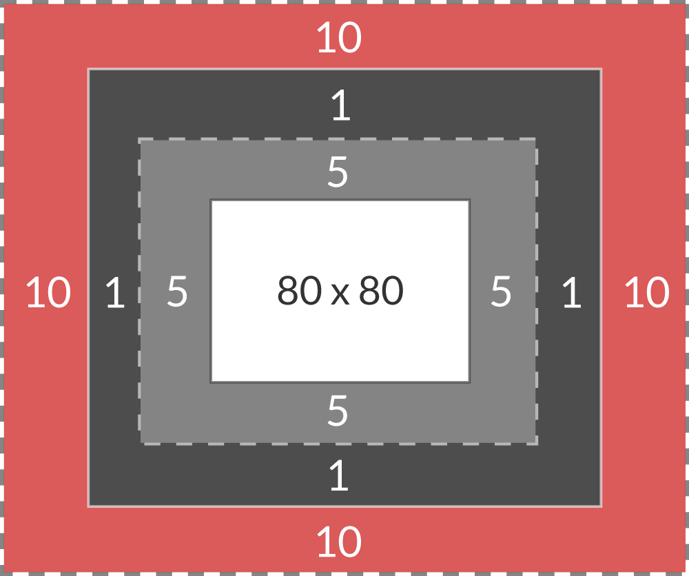

The CSS Box Model - What does it all mean?!
HTML Elements and their Boxes
HTML Elements and their layout are responsible for forming the basic structure of a webpage. Different elements can nest within one another to create unique and interesting formats. However, for these elements to come to life and display as their designer intended, CSS is required. CSS is a markup language which tells internet browsers how to display HTML elements, and the one of the most important things specified by the CSS for each element is how to display the element's box model.
The box model is made up of four components:
- The Content
- The Padding
- The Border
- The Margin
CSS can tell a browser how to display each of these components in very different ways. Take a look at the below examples of the same element formatted with different alterations to the box model:
I'M AN ELEMENT AND I HAVE A BOX!
I'M AN ELEMENT AND I HAVE A BOX!
I'M AN ELEMENT AND I HAVE A BOX!
I'M AN ELEMENT AND I HAVE A BOX!
I'M AN ELEMENT AND I HAVE A BOX!
I'M AN ELEMENT AND I HAVE A BOX!
The Components Explained
CONTENT
The content of the element is what goes between the HTML tags in the markup. It could be text, it could be imagery... or it could be nothing! Some very clever CSS tricks can be achieved by adding styles to empty boxes! Most elements however do have content, and it's normally the content that gets out attention first.

PADDING
Padding is the space immediately around the content. Not to be confused with Margin, increasing the amount of padding will increase the size of the element's box! This is great for allowing background colours and other styles to carry beyond the confines of the content, and can be used to great effect.
BORDER
The Border is the boundary that lies at the edge of the box, immediately after the padding. It can be styled in a variety of ways (or not at all!) to give a variety of different appearances. Some clever CSS tricks can be used with borders to add stylistic flair to otherwise boring elements.
MARGIN

Perhaps the most important of all is Margin. Margin defines the space outside the box that no other elements are allowed to enter. It can be used to position elements around a page, or stop them overlapping in some cases. From a design perspective, empty space can be just as important as content, and clever manipulation of margin can achieve this.
It sounds simple - but it's not!
It's really easy for all the padding and margin on multiple different elements to get confusing and out of hand really fast. Conflicting CSS rules can cause content to break the rules and burst out of its box. What's more confusing, different display types have different rules for whether or not they listen to padding and margin rules! Inline elements ignore vertical margin for example. Start throwing in things like Flexbox and Grid and it all gets REAL interesting!
Like most things, I guess the best way to master it is practice! Lets do this!